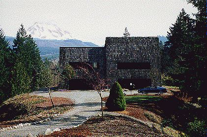

Faster loading samples Index House Sample Rental Sample Forest Sample Creek Sample View Sample Full pages (slower to load) Contents House Rental Forestland Creeks Views Maps Information Contact Us
Index House Sample Rental Sample Forest Sample Creek Sample View Sample Contents House Rental Forestland Creeks Views Maps Information Contact Us * Back to the Anderson Garden *

The unique homesite is like an island in the sky. It drops off sharply on all sides except for a narrow neck at the driveway.
Below are plateaus at different levels, the forestland, and the creeks. The rich density of the tree cover and the intimacy
of falling water in the forest contrast with the expansiveness of sky and mountains from up on the island.
The property is bounded for about a quarter mile on each of two sides by a large and a medium-sized lake-fed creek, and
intersected by a small, spring-fed creek. Salmon spawn in the two larger creeks.
Old growth fir, cedar, and hemlock, each 150 feet or more high, dominate the forests surrounding the plateau on which the house sets.
The house is focused on the three peaks of Mt. Rainier. This ever-changing scene is complemented by views of the foothills,
surrounding forests, and creeks.
The 896 square foot rental house overlooks Mt. Rainier, the forest, and Kapowsin Creek. It has had two renters since it was constructed in 1982 and never been empty.
Faster loading samples Index House Sample Rental Sample Forest Sample Creek Sample View Sample Full pages (slower to load) Contents House Rental Forestland Creeks Views Maps Information Contact Us